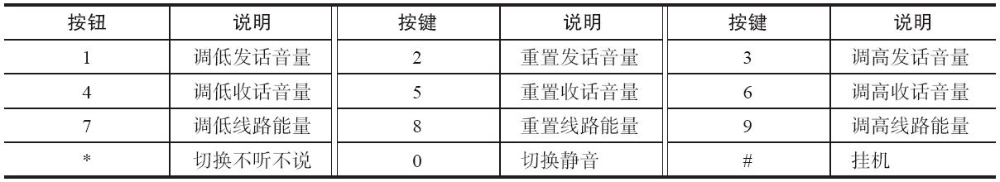
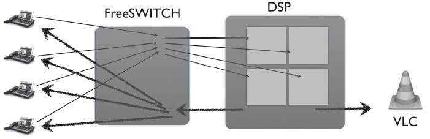
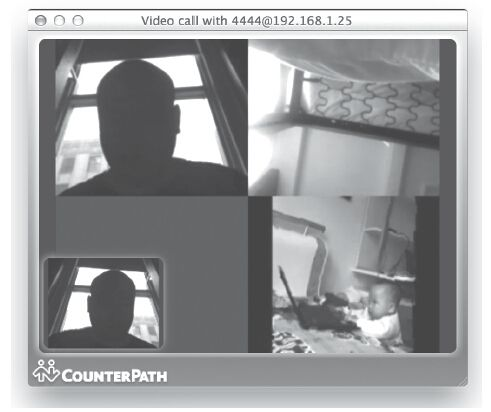
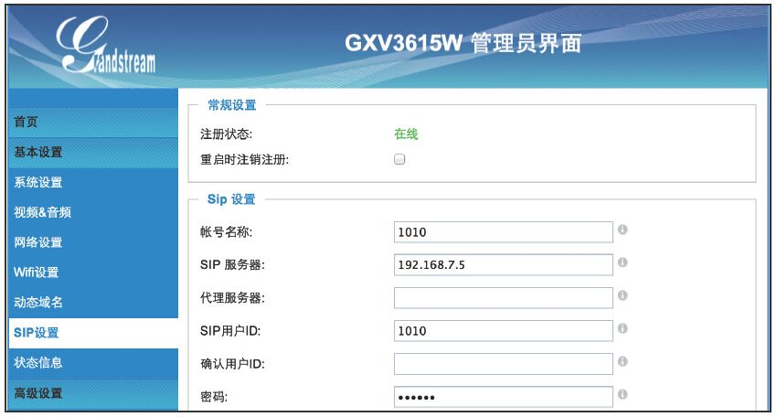
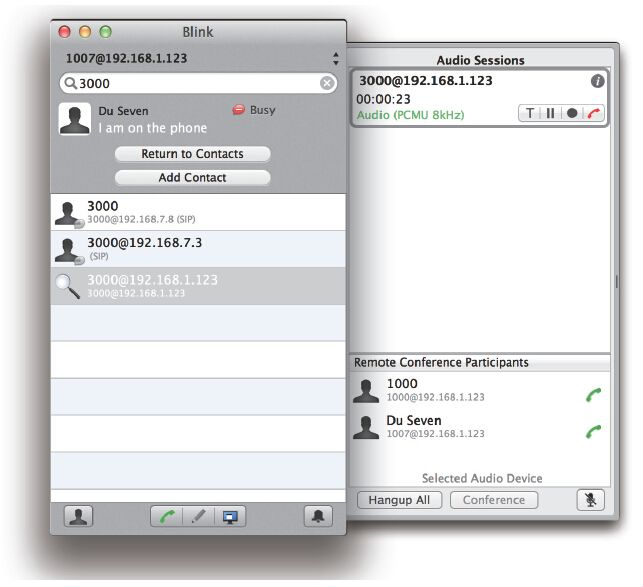

12.5 多人电话会议
FreeSWITCH支持很强大的多人电话会议（又称音频会议）功能，在会议过程中，可以随时播放声音文件、对会议进行录音，也可以对任意成员进行禁言、禁听等操作。另外，它也支持简单的视频会议功能。下面我们就来一起实验一下会议是怎么工作的，以及如何对会议进行控制的。电话会议功能是在mod_conference [1] 这个模块中实现的。
12.5.1 音频会议
我们先使用FreeSWITCH的默认配置对音频会议来做一个初步的体验。
首先，拿起电话拨打3000，就进入了一个会议。在会议中，每一个Channel都是会议的一个成员（Member），会议中的每个成员都是以member_id标志的，它是一个整数值。
由于第一次进入会议时只有一个成员，会议系统会首先播放“You are the only member in this conference”，即提示该会议中只有你一个成员。
接下来可以用其他电话也呼入3000进行电话会议。
1.使用DTMF按键进行控制
在会议中，各成员也可以随时通过DTMF按键来进行各种操作。按键对应的操作可以在系统配置文件中配置，默认的控制功能如表12-1所示。
表12-1 电话会议中的功能按键

其中，比较常用的是0，它用于切换本成员静音与否 [2] 。一般来说，在一个会议中，如果超过3个人同时讲话的话，就不容易分辨是谁在说话了；因此，如果某个成员长时间不发言，就可以自发地将自己端的电话静音，以保证会议的质量。另外，有时候有的会议成员的背景环境噪声比较大，如果不发言，也可以使用静音或调低说话音量。
2.配置Dialplan将电话路由到会议
mod_conference提供了一个conference App，因此，我们可以直接在Dialplan中使用它。下面的Dialplan是FreeSWITCH提供的默认的Dialplan：
<extension name="nb_conferences">
<condition field="destination_number" expression="^(30\d{2})$">
<action application="answer"/>
<action application="conference" data="$1-${domain_name}@default"/>
</condition>
</extension>
可以看出，正则表达式^(30\d{2})$匹配以30开头的4位数号码，所以，用户可以呼叫3000～3099之间的号码进入该Dialplan。电话路由到这里后，将首先执行answer动作对来话应答（这步也可以省略，如果后续执行到conference的话它也可以自动应答），然后就可以执行到conference进入会议了。
其中，conference的参数$1-${domain_name}@default中引用了一些变量，domain_name一般来说是一个IP地址（如192.168.1.7），如果用户呼叫的是3000，则上面的参数值就是3000-192.168.1.7@default。其中，@之前的部分为会议的名字，之后的部分为会议的参数。在这里，只有一个参数default，它是一个会议的Profile。该Profile中定义了一个会议的基本参数和特性。我们先不讨论Profile中参数的细节，来接着看下面三个Dialplan配置（它们都是在默认Dialplan中的，为了节省篇幅，我们省去了其他不关心的内容）：
<condition field="destination_number" expression="^(31\d{2})$">
<action application="conference" data="$1-${domain_name}@wideband"/>
<condition field="destination_number" expression="^(32\d{2})$">
<action application="conference" data="$1-${domain_name}@ultrawideband"/>
<condition field="destination_number" expression="^(33\d{2})$">
<action application="conference" data="$1-${domain_name}@cdquality"/>
可以把它们与3000的那个对比一下，它们除了匹配的被叫号码不同外，进入会议的Profile也不同。其中，如果拨打31开头的4位数电话号码就进入一个宽带（Wideband，16kHz）的会议；拨打32开头的4位数电话号码就进入一个超宽带（Ultra Wideband，32kHz）的电话会议；如果拨打33开头的4位数电话号码就进入一个CD音质（CD Quality，48kHz）的电话会议。关于这些Profile的区别我们稍后会讲到。
上面我们只讲了conference App的Profile参数，实际上还可以指定其他参数。conference的参数总的语法规则是<conference_name>@<profile>+<pin>+flags{<flag1>|<flag2}。其中，各参数也可以酌情省略。几种有代表性的写法如下：
·3000：3000是一个会议名称
·3000+1234：3000是会议名称，使用默认的Profile default，1234是密码。所有成员在进入会议时都会提示输入密码。
·3000@default+1234：同上，只是明确指定了Profle的名字为default，当然也可以指定其他Profile的名字。
·3000@default+1234+flags{mute|waste}：在上面的基础上，又增加了mute和waste参数。
·3000@default+flags{endconf|moderator}：与上面的类似，只是参数换成了endconf和moderator。
通过上面的语法规则可以看到，会议的名称应该是普通字母加数字组成，不要有“@”、“+”之类的特殊字符。
3.使用API命令控制会议
除了conference App外，FreeSWITCH也提供了一个conference API命令用于对会议进行各种控制。在控制台上输入conference命令不加任何参数可以显示一些命令帮助信息，如：
freeswitch> conference
<conf name> list [delim <string>]|[count]
<conf name> xml_list
<conf name> energy <member_id|all|last|non_moderator> [<newval>]
<conf name> volume_in <member_id|all|last|non_moderator> [<newval>]
<conf name> volume_out <member_id|all|last|non_moderator> [<newval>]
....
上面列出了conference命令的参数格式，其中，第一个参数是会议的名称；紧接着后面的参数是一个子命令；子命令后面是子命令的参数。不过，上述帮助信息中没列出的是，其中的子命令“list”和“xml_list”前面也可以不需要会议名称，如果没有会议名称就默认列出系统中所有的会议，如：
freeswitch> conference list
freeswitch> conference xml_list
下面我们按帮助中列出的格式把各子命令简单介绍一下。
 注意
注意
我们在这里都以会议名称为3000做例子，默认的Dialplan生成的会议是类似“3000-IP地址”这样的会议名称，为了简单起见可以将Dialplan中的“-${domain-name}”去掉（在本书的例子中我们大部分都去掉了，这样可以避免每个人的IP地址不同造成的差异）。
·list和xml_list：列出会议中的成员。
·energy：设置成员的能量值。FreeSWITCH具有静音检测功能，只有音量超过一定能量才能混音到会议桥中。它的参数首先是一个成员的ID（member_id），即修改哪个成员的能量，然后是实际能量值。如，ID为1的成员背景噪声比较大，将其的能量提升为500（默认值为300）。
freeswitch> conference 3000 energy 1 500
其中，成员的ID除了以整数形式存在的值外，还可以是下列特殊值：
 all：所有成员
all：所有成员
 last：最后加入的成员
last：最后加入的成员
 non_moderator：非会议主席的成员
non_moderator：非会议主席的成员
·volume_in：调整成员的输入音量，如下面的例子。
freeswitch> conference 3000 volume_in 1 1
·volume_out：调整成员的输出音量。
·play：向会议中播放声音文件。如向全体成员播放声音的配置如下。
freeswitch> conference 3000 play /tmp/test.wav
仅向ID为1的成员播放声音的配置如下。
freeswitch> conference 3000 play /tmp/test.wav 1
·pause：暂停会议中声音文件的播放。
·file_seek：声音文件的快进、快退。
·say：使用TTS功能播放文本。如向会议中播放某一文本的配置如下。
freeswitch> conference 3000 say "Hello everyone"
·saymember：仅向某个成员播放TTS。
·stop：停止声音文件的播放。看下面的例子。
freeswitch> conference 3000 stop current #
停止当前正在播放的文件
freeswitch> conference 3000 stop all #
停止所有正在播放的文件
freeswitch> conference 3000 stop last #
停止最后播放的文件
·dtmf：向某个成员发送DTMF。
·kick：踢出某个成员。
·hup：挂断某成成员。
·mute：将成员静音（不允许发言）。
·tmute：切换成员的静音状态。
·unmute：取消成员的静音。
·deaf：禁听。
·undeaf：取消禁听。
·relate：使用该功能可以任意控制两个成员间是否可以听到彼此的声音，如下面的例子。
freeswitch> confernece 3000 relate 1 2 nohear # 2
听不到1
freeswitch> confernece 3000 relate 1 2 nospeak # 1
听不到2
freeswitch> confernece 3000 relate 1 2 clear #
清除建立的关系
·lock：锁定会议，别人无法加入。
·unlock：将会议解锁。
·agc：启用自动增益控制（Auto Gain Control）。
·dial：从会议呼出。参数是一个呼叫字符串，如呼叫1000加入会议：
freeswitch> conference 3000 dial user/1000
也可以在呼出时指定主叫名称和号码，如以下命令将在1000的话机上显示来电信息为“Seven<7777>”。
freeswitch> conference 3000 dial user/1000 Seven 7777
·bgdial：同dial，只是dial是阻塞的，bgdial是异步的，不阻塞当前命令的执行，类似bgapi。
·transfer：将一个成员转到另一个会议中，如以下命令将成员1转到3001中。
freeswitch> conference 3000 transfer 3001 1
·record：对会议录音，如下面的例子。
freeswitch> conference 3000 record /tmp/conference.wav
·chkrecord：检查录音情况。
·norecord：停止录音。
·pause：暂停录音。
·resume：恢复录音。
·recording：如果在会议的Profile中设置了录音模板，则该子命令可以开始和停止录音。如下面的例子。
freeswitch> conference 3000 recording start #
开始
freeswitch> conference 3000 recording stop #
停止
freeswitch> conference 3000 recording check #
检查
freeswitch> conference 3000 recording pause #
暂停
freeswitch> conference 3000 recording resume #
继续
·exit_sound：如果会议中有人退出，所有成员都可以听到一个声音，该命令可以修改这个声音。如下面的例子。
freeswitch> conference 3000 exit_sound on #
启用
freeswitch> conference 3000 exit_sound off #
禁用
freeswitch> conference 3000 exit_sound none #
静音
freeswitch> conference 3000 exit_sound file /tmp/a.wav #
修改成该文件指定的声音
·enter_sound：如果会议中有成员进入则播放该声音，用法同上。
·pin：修改会议的密码。
·nopin：取消会议密码。
·get：取得参数的值，这些参数有max_members（最大成员数）、sound_prefix（声音文件路径）、caller_id_name（主叫名称）、caller_id_number（主叫号码）等。
·set：设置上述变量的值。
·floor：将某成员设为floor，没什么用。
·vid-floor：设置视频成员的floor。在视频会议中，所有人都看到持有floor的成员。
·clear-vid-floor：取消视频成员的floor。
4.配置文件
最后，我们再一起来看一下会议的配置文件，它的默认位置是conf/autoload_configs/conference.conf.xml。其中，首先配置了一组DTMF按键控制功能：
<caller-controls>
<group name="default">
<control action="mute" digits="0"/>
<control action="deaf mute" digits="*"/>
<control action="energy up" digits="9"/>
<control action="energy equ" digits="8"/>
<control action="energy dn" digits="7"/>
<control action="vol talk up" digits="3"/>
<control action="vol talk zero" digits="2"/>
<control action="vol talk dn" digits="1"/>
<control action="vol listen up" digits="6"/>
<control action="vol listen zero" digits="5"/>
<control action="vol listen dn" digits="4"/>
<control action="hangup" digits="#"/>
</group>
</caller-controls>
上述的配置也就是我们在前面看到的按键控制的配置参数，读者可以对比一下看看各参数与实际功能的对应关系。如果需要改变这些按键的功能，建议另外加一个组（group），然后就可以通过组名在后面的Profile中引用。
接下来，就可以在配置文件中找到我们前面讲到的那几个Profile，如：
<profile name="default">
<profile name="wideband">
<profile name="ultrawideband">
<profile name="cdquality">
可以看到，这些Profile之间最主要的区别就是会议的采样率，不同音质的会议采样率不同。我们最常用的defalt Profile使用与PSTN一致的8000Hz的采样率。参数配置如下：
<param name="rate" value="8000"/>
此外，Profile的参数中还有一大堆的“-sound”参数，它们配置了在会议中不同时刻播放的声音。如“muted-sound”是在用户被静音时播放给用户的，“unmuted-sound”则相反。有些用户不喜欢在加入会议时听到“You are the only person in this conference”，则可以把“alone-sound”改掉或注释掉。
“comfort-noise”是一个比较有用的参数。在多人会议中，如果没有人发言，则会议中会很安静，大家会误以为会议或者网络出了问题。因此，设置该参数可以产生舒适噪声。该参数的值可以根据需要调整，详情可以参见12.6.1节中的silence_stream部分。
“auto-record”参数可以设置一个录音模板，当会议室中有至少两个人时，便会自动开始录音。
其他的参数我们就不多介绍了，读者可以自己尝试一下或参考该模块相关的Wiki页面。
12.5.2 视频会议
FreeSWITCH也支持视频会议，下面我们就来看一下FreeSWITCH在视频会议方面都有哪些功能。
1.普通视频会议
按12.4.1节中的说明配置好了视频编解码后，就可以拨打3000呼入默认的会议进行视频会议了。由于FreeSWITCH目前不能对视频进行转码，因而只能是所有人共同看其中一个人的视频图像。那么，具体应该看谁的呢？笔者经常开玩笑说：“谁的声音大就看谁的”。当然，这么说不完全准确。实际上，在会议的所有成员中，其中一个成员会有一个vid_floor标志，谁持有这个标志，大家就看到谁。这个标志是在会议中由FreeSWITCH根据发言者的声音能量值来动态分配的。一般来说，当有多个人轮流说话时，大家就轮流看到正在发言的人，在这种情况下它工作得很好。
当然，视频与音频不同，前者切换没有后者快。而且，在有的视频终端上，可能会出现“花屏”（即屏幕杂乱，出现马赛克之类的）现象。产生这种现象的原因是视频的传输和编码机制造成的。一般来说，视频是以一帧一帧的图像压缩后传送的 [3] 。为了减少传送的数据量，则先传送一个完整的帧（称为关键帧 [4] ），然后后面只传送后面的帧与前面帧的不同的部分（称为非关键帧或预测帧 [5] ）。由于每帧之间图像的差别不是很大，因而可以大大减少传送的数据量。但为了保证画面的清晰流畅以及减少由到丢包等引起的影响，每隔一段时间需要重新发一个关键帧。
所以，在视频会议中发生发言人的视频切换时，如果大家的终端正好错过了新的发言人的终端发出的关键帧，而此时只收到预测帧，在播放时就可能会出现花屏的现象。为了解决这个问题，FreeSWITCH支持在发生视频切换时主动请求一个关键帧。对于一些旧的SIP视频终端，一般支持picture_fast_update [6] 请求；对于新的应用，如WebRTC，则会使用FIR [7] 功能请求关键帧。
有时候，在会议中我们可能不希望FreeSWITCH自动改变当前看到的成员图像，而是希望手工控制。在FreeSWITCH 1.4中，新加入了一个vid-floor子命令，可以用它来控制当前哪个成员显示在大家面前。比如，在会议中，以下命令将大家看到的视频切换到member-id为3的成员：
conference 3000 vid-floor 3 force
注意其中的force参数，该参数是可选的。如果没有该参数，则只是临时切换到该成员，根据声音大小自动切换还是会出现；如果使用该参数，就固定永远显示这一个成员（当然如果该成员挂机，就又会变成自动选择模式）。
FreeSWITCH从1.4版开始也支持使用WebRTC参与会议。不过，由于FreeSWITCH不能进行视频转码，因而参与会议的成员必须同使用相同的编码才能相互看到。一般的视频话机都使用H263或H264编码，而Chrome浏览器中实现的WebRTC仅支持VP8编码。
2.多画面融屏 [8]
另一种比较常见的电话会议是融屏。即将多个成员的图像缩小，再合并到一个图像上，这样，如果会议室中的成员比较少（一般用4分屏或9分屏，再多了以后图像就很小了）时，就可以看到所有人的图像了。
FreeSWITCH内部的视频不能进行转码，因而也不支持这种应用。不过，可以通过将视频呼叫转发到其他的MCU（Multiple Control Unit）上面实现。
笔者在2013年ClueCon大会上也演示了如何把FreeSWITCH做成一个MCU的示例 [9] 。当然，该Demo是配合一个硬件板卡实现的，不是标准FreeSWITCH的组成部分。不过，在这里，我们也简单介绍一下其实现思路，或许对基于FreeSWITCH开发这方面应用的读者有借鉴意义。
由于考虑到软件的视频转码可能会有性能问题，正好有个合作伙伴也提供了一个DSP [10] 用于测试，笔者就花了一些时间写了个示例程序。
笔者拿到的DSP提供SDK，很快在其提供的示例代码基础上做了一个四分屏融屏程序。实现思路很简单，给视频芯片发过去四路RTP视频流，经过融合以后返回来一路RTP。为简单起见，我们都使用同一种视频编码——H264。实现原理如图12-1所示。

图12-1 视频融屏原理示意图
其中，我们可以看到四个视频终端的视频流都发送到FreeSWITCH，我们将它们转发到DSP上，然后控制DSP进行融屏，并将结果视频返回给FreeSWITCH，FreeSWITCH再将视频发送到各个视频终端上去。当然，为了使例子看起来更灵活，笔者还特意控制DSP芯片将融合后的视频也转发了一路到一个VLC播放器上播放。
为了实现该应用，笔者修改了mod_conference，增加了一些代码 [11] 。在会议开始时，每加入一方就将其视频RTP流直接转发到DSP视频处理芯片上，它会把各路视频融合，并返回一路视频RTP流到FreeSWITCH，在FreeSWITCH中启动一个线程专门接收该路视频，并发送到所有视频终端上去。然后所有终端就都能看到所有与会者融合以后的画面，而混音功能仍由FreeSWITCH的mod_conference提供。
图12-2是笔者在芝加哥“彩排”时的截图。其中左上角的视频就是笔者；右上角是一个手机SIP客户端发过来的视频；右下角是从一个本地视频文件中播放的视频；左下角是空的，等待其他成员加入。

图12-2 视频融屏应用截图
3.视频监控
有了视频会议及融屏的解决方案以后，就可以将视频监控也融入到FreeSWITCH中了。为了能与FreeSWITCH进行视频通信，最简单的方案就是找一个支持SIP协议的摄像机。笔者验证过一款Grandstream（潮流）高清IP摄像机，型号是GXV3615W。图12-3是该摄像机的SIP配置页面，可以看出，它跟普通的SIP话机配置方式基本上是一样的。

图12-3 GXV3615W摄像机SIP配置
配置完成后，该摄像机也是以一个SIP客户端的方式注册到FreeSWITCH上。一般来说，它不会主动发起呼叫，但是我们可以从FreeSWITCH中呼叫它。摄像机在接收到呼叫后，会自动应答，所以，我们就可以简单呼叫一个电话号码查看该摄像机覆盖范围内的图像了。在一些智能家居类的应用中，通过呼叫一个电话号码即可以查看家里的情况。在FreeSWITCH中，就这么简单地实现了。
当然，我们也可以将该摄像机加入会议，如（所配置的账号为1010）：
conference 3000 dial user/1010
由于该摄像机一般不会说话，所以在FreeSWITCH视频会议中如果想看到它的话，就需要使用vid-floor功能强制把floor设置成它，如：
conference 3000 vid-floor 2 force
当然，如果使用前面讲到的视频融屏方案，就很容易看到它了。
扩展阅读
在现实生活中，很多摄像机（如马路上的监控）早就安装好了，不可能一下子全部换成SIP。因此，如何与这些摄像机对接也是一个需要解决的问题。通过研究FreeSWITCH的代码，我们给mod_vlc模块打了一个补丁 [12] ，让它能支持视频。由于VLC库支持相当多的视频格式和协议，不管是一般摄像机使用的RTSP协议，还是有些视频编码器输出的Mpeg2TS格式，VLC都能正常播放。因此，打了补丁的mod_vlc就可以将这些视频都“收”到FreeSWITCH中来，再发到其他任何它支持的视频终端上去。通过这些功能，就可以将不同种类的音、视频客户端用SIP联系起来，每个设备也可以分配一个号码，通过这些号码就可以随时“呼叫”这些设备，查看监控现场的情况。而这种思路也与2011年国家发布的（2012年6月实施）标准编号为GB/T 28181-2011的《安全防范视频监控联网系统信息传输、交换、控制技术要求》 [13] 不谋而合。
总之，FreeSWITCH作为一个融合平台，将新一代的SIP通信与旧时代的各种音频及视频设备融合在一起，可以很容易地做出各种创新、实用的解决方案。
4.RFC4579
RFC4579 [14] 定义了一个基于SIP的视频会议控制标准，可以使用标准的视频客户端控制会议里的成员。当会议中的成员有变化时，也可实时通知SIP客户端，以便将成员信息显示在客户端的界面上。FreeSWITCH支持这一特性。它的实现原理是使用了SIP中的SUBSCRIBE/NOTIFY机制。客户端在启用这一特性时，会向FreeSWITCH发起SUBSCRIBE请求，订阅与会议相关的资源；FreeSWITCH在资源的内容发生变化时（如有人入会、出会）便会发送NOTIFY消息通知客户端。具体的消息内容是用XML定义的。
如果让FreeSWITCH支持该特性，需要在会议的Profile中开启RFC4579的支持，配置如下：
<param name="conference-flags" value="rfc-4579"/>
然后，FreeSWITCH默认配置的Dialplan中定义的会议名称与被叫号码不匹配，会导致订阅不匹配的现象，因此，我们把默认的“3000”会议的Dialplan中会议名称中的“-${domain_name}”部分去掉，改成如下的样子：
<extension name="nb_conferences">
<condition field="destination_number" expression="^(30\d{2})$">
<action application="answer" data="is_conference"/>
<action application="conference" data="$1@default"/>
</condition>
</extension>
其中，可以看出，除了会议名称要与实际的被叫号码匹配外，这一次我们使用的answer App多了一个is_conference参数，它标志该会议是一个支持RFC4579的会议，在SIP应答消息“200 OK”中会包含相应的参数，以通知客户端FreeSWITCH支持这一特性。当然，在此我们也可以不使用answer进行应答，而让来话直接进入会议。在会议中，conference App会根据Profile中定义的参数做出正确的应答选择。
在撰写本书时，笔者已知支持这一特性的唯一客户端是Mac版的Blink [15] ，因此，在这里我们就用它来进行测试。
在FreeSWITCH中经过上面所述的配置，然后用Blink注册到FreeSWITCH上，呼叫3000进入会议，然后用其他客户端也呼入会议，就可以看到如图12-4所示的界面，其中，右下角显示了会议室中的两个成员1000和1007。

图12-4 Blink RFC4579会议界面
当然，如果不使用Blink的话，也可以在开发自己的SIP客户端时参考RFC4579，看能否在自己的客户端中增加这些支持。
[1] 参考https://wiki.freeswitch.org/wiki/Mod_conference。
[2] 当然，如果使用软电话，也可以将本地的麦克风静音。不过，并不是所有的话机上都有静音按钮，因而，该选项还是很有用的。
[3] 众所周知，当帧的频率大于一定值的时候，人们的眼睛就可以看到流畅的图像。每秒传送的帧的数量称为帧频，即FPS（Frame Per Second）。一般来说，电影使用24FPS、PAL制式的电视为25FPS、NTSC制式的为29.97FPS，而普通的SIP终端一般为15或30FPS。
[4] 这种完整的帧称为Intraframe，也称为关键帧，即Key Frame。在MPEG编码（可以认为H264是MPEG的增强版）中称为I帧。
[5] 这种非关键帧称为Interframe，也称为预测帧，在MPEG编码中称为P帧。这种帧需要引用前面的关键帧和预测帧才能还原原始的图像。有的视频系统中也使用双向预测帧，即MPEG编码中的B帧。但B需要前后向的引用，一般不用在实时通信中。VP8编码中也没有双向预测帧。
[6] 在SIP消息中是通过INFO消息实现的，参考http://tools.ietf.org/html/rfc5168。
[7] FIR的全称为Full INTRA-frame Request，即完整关键帧请求。它是通过RTCP协议实现的，参考http://tools.ietf.org/html/rfc2032。
[8] 注意本节的内容不是标准FreeSWITCH具有的功能。在此仅向读者提供一种实现思路。
[9] 部分演讲视频参见http://v.youku.com/v_show/id_XNjAxMDM4NDQ4.html。
[10] Digital Signal Processor，即数字信号处理器。一般来说，我们服务器上通用的CPU不适合处理视频运算，而视频处理一般使用专用的硬件DSP或GPU实现。
[11] 由于这代码依赖于特定的硬件芯片，因此尚未合并到标准的FreeSWITCH代码库中。
[12] 当然，这部分不是FreeSWITCH的标准功能，代码也未开源，在此这种方案和思路仅供读者参考。
[13] 参见http://www.sac.gov.cn/gjbzgg/201123/。
[14] 参见http://tools.ietf.org/html/rfc4579。
[15] 参考http://icanblink.com/。